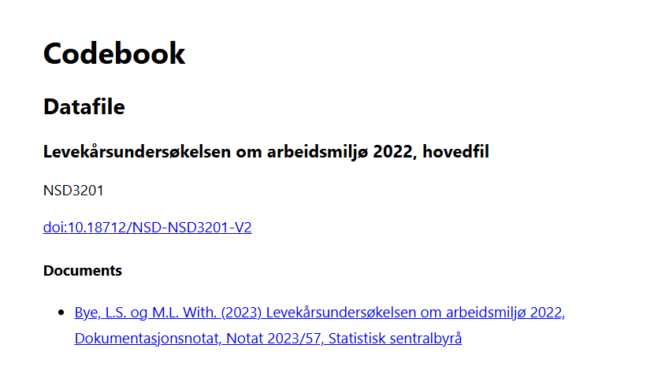

Sammendrag
Sammendrag her
1 Innledning
Denne bacheloroppgaven undersøker sammenhengen mellom sosioøkonomiske forhold og sykefravær, med et spesielt fokus på hvordan endringer i formuefordeling kan påvirke arbeidstakeres helse og fravær fra jobben. Vi benytter en Job Demands-Resources (JD-R) modell som teoretisk rammeverk, og analyserer data fra Levekårsundersøkelsen om arbeidsmiljø.
Bakgrunn
I årene etter finanskrisen har vi observert en økende formueulikhet i mange vestlige land, inkludert Norge. Denne trenden har blitt forsterket etter pandemien, spesielt i boligmarkedet, hvor vi ser at lønnsveksten ikke har holdt tritt med prisøkningen på eiendeler. Dette har gjort det relativt vanskeligere for unge og de med lavere inntekter å opparbeide seg formue, for eksempel gjennom boligkjøp. Vi forventer dermed at formuenivået til arbeidstakere har en effekt på spesielt motivasjon og helse, og dermed påvirke sykefraværet. Når det blir stadig vanskeligere å oppnå økonomisk trygghet og en akseptabel levestandard, kan det føre til økt stress, redusert jobbmotivasjon, og i verste fall dårligere helse og økt fravær. Hypotesene våre er basert på Job Demands-Resources (JDR) modellen, som antyder at jobbkrav og jobbressurser påvirker sykefravær, og at formue kan moderere disse effektene. Hovedsakelig vil vi se på hvordan formue påvirker sykefravær, og der forventer vi at høyere formue gir lavere sykefravær og at høyere formue demper de negative effektene av jobbkrav og forsterker de positive effektene av jobbressurser.
Å forstå hvordan disse endringene påvirker arbeidstakeres helse og fravær er viktig for å kunne iverksette tiltak som kan motvirke negative konsekvenser av økende formueulikhet. Dette kan være spesielt viktig i en tid hvor vi ser en økende polarisering i samfunnet, og hvor det er viktig å sikre at alle har like muligheter til å oppnå økonomisk trygghet og god helse, uavhengig av formue og inntekt. Problemstillingen for oppgaven er dermed: Forklarer nivået på formue sykefraværet i Norge?. Vi vil undersøke om forskjellige formuegrupper har ulikt sykefravær, og om det er en sammenheng mellom formue og sykefravær. Vi vil også se på om det er andre faktorer som påvirker sykefraværet, og om disse faktorene kan forklare eventuelle sammenhenger mellom formue og sykefravær. Vi vil danne oss tre hypoteser basert på teori og tidligere forskning, og teste disse ved hjelp av en Structural Equation Model (SEM), hvor vi kontrollerer for andre relevante faktorer, som for eksempel alder, kjønn, utdanning og yrke.
Tidligere forskning har funnet at sosioøkonomiske forhold, som inntekt og utdanning, har en effekt på helse og sykefravær. Jaeggi et al. (2021) testet dette på et lite samfunn av innfødte i Tsimane i Bolivia, hvor de fant at økt formue hadde en positiv effekt på helse, mens større ulikhet ledet til respirasjonssykdom som økte dødeligheten. Før vi går gjennom teori og empiri vil vi gå gjennom begrepsavklaringer, hvor vi vil definere formue, sykefravær og andre relevante begreper. Etter teorien vil vi gå dypere inn i tidligere forskning på temaet, og se på hva som er funnet tidligere, og hvilke mekanismer som kan forklare sammenhengen mellom formue og sykefravær.
Oppsett
Oppgaven er delt inn i følgende kapitler: I kapittel 2 vil vi gi en teoretisk bakgrunn for oppgaven, og gjøre rede for tidligere forskning på temaet. I kapittel 3 vil vi forklare metode og datagrunnlag, i kapitell 4 gjennomføres analysen og i kapittel 5 vil vi presentere resultatene fra analysen. I kapittel 6 vil vi diskutere resultatene, og i kapittel 7 vil vi konkludere og gi anbefalinger for videre forskning.
Avslutningsvis i appendiks har vi med relevant kode som er brukt for å analysere dataene og en oversikt over testene som er gjort i analysen, og til slutt en oversikt rundt bruk av kunstig intelligens i oppgaven.S
2 Teori
I dette kapittelet vil vi gi en teoretisk bakgrunn for oppgaven, og gjøre rede for tidligere forskning på temaet. Vi vil først definere begrepene kortfattet, og deretter presentere teori og empiri som er relevant for oppgaven. Vi vil spesielt fokusere på Job Demands-Resources (JDR) modellen, som er et mye brukt rammeverk for å forstå sammenhengen mellom arbeidsmiljø og helse. Vi vil også se på tidligere forskning på temaet, og se på hva som er funnet tidligere, og hvilke mekanismer som kan forklare sammenhengen mellom formue og sykefravær.
2.1 Job Demands-Resources (JDR) modellen
Job Demands-Resources-modellen (Schaufeli & Bakker, 2004) er et rammeverk for å forstå hvordan arbeidsmiljøet påvirker helse og trivsel. Modellen skiller mellom to typer faktorer: jobbkrav (job demands) og jobbressurser (job resources). Jobbkrav refererer til kravene og utfordringene som ansatte møter i jobben, mens jobbressurser refererer til de ressursene og støtten som ansatte har tilgjengelig for å håndtere disse kravene. Modellen antyder at en balanse mellom jobbkrav og jobbressurser er viktig for å opprettholde helse og trivsel på arbeidsplassen. Høyere jobbkrav kan føre til stress og utbrenthet, mens høyere jobbressurser kan føre til økt motivasjon og trivsel.
Grunnen til at vi velger JD-R modellen er fordi vi forventer at formuenivå kan forandre jobbkrav og jobbressurser. Vi tenker også at formuenivået har mye å si til også hvor mye jobbkrav og jobbressurser påvirker personer.
2.1.1 Formue i JD-R
Vi mener at økonomiske ressurser som formue, kan hjelpe med å forklare sykefraværet enda mer og vil bruke den som en ekstern modererende faktor.
Formue gir en økonomisk buffer som kan redusere sårbarheten for jobbrelatert stress. Personer med høy formue kan ha større valgfrihet i arbeidslivet, og tåler lettere perioder med høy belastning uten at det går like hardt utover helse eller jobbmotivasjon. Men personer med lav eller negativ formue vil ofte være mer økonomisk avhengige av inntekten fra arbeid, og kan derfor være mer sårbare for jobbrelatert stress
Formue kan også ha betydning for fremtidsperspektiv og indre motivasjon. Personer med lav formue kan oppleve mindre kontroll over egen livssituasjon og lavere forventninger til fremtidig økonomisk trygghet, noe som potensielt svekker arbeidsglede og motivasjon.
Vi antar da at formue påvirker hvordan individet opplever og håndterer jobbkrav og jobbressurser, og at det har indirekte effekter via motivasjon som påvirker sykefravær.
Ved å inkludere formue som en ekstern faktor i JD-R modellen, forsøker vi å fange både den direkte effekten av økonomisk trygghet og hvordan denne tryggheten forsterker eller demper effektene av jobbrelaterte faktorer. I et samfunn med økende økonomisk ulikheter hvor forskjellen mellom dem som har og dem som ikke har, blir større og større, er det viktig å forstå hvordan dette påvirker arbeidstakere og deres helse.
2.2 Tidligere empirisk forskning
Forklar kortfattet hva tidligere forskning har funnet generelt om problemstillingen (hvorfor det er viktig å studere fra et samfunnsperspektiv)
Tidligere empirisk forskning har over tid vist positive forhold mellom forskjellige Job Demands-Resources-faktorer og årsaker som kan føre til sykefravær.
Utbrenthet og arbeidsengasjement kan betraktes som to distinkte psykologiske tilstander. I en empirisk studie av Schaufeli & Bakker (2004) ble det testet en modell hvor disse to variablene fungerte som avhengige variabler, mens ulike Job Demands-Resources-faktorer ble inkludert som uavhengige variabler i en Structural Equation Model (SEM). Studien viste at utbrenthet og jobbengasjement var negativt korrelert, og at jobbkravene hadde en positiv effekt på utbrenthet, mens jobbressursene hadde en positiv effekt på jobbengasjement. Dette kan tyde på at høyere jobbkrav kan føre til høyere utbrenthet, mens høyere jobbressurser kan føre til høyere jobbengasjement.
Mikro
I en annen studie av Vander Elst et al. (2016) utført på Belgisk hjemmepleiepersonell, ble det testet en Job Demands-Resources-modell hvor utbrenthet og jobbengasjement var utfallsvariabler. Jobbkrav og jobbressurser ble modellert som prediktorer. Studien viste at jobbkravene var positivt assosiert med utbrenthet, mens jobbressursene hadde var positivt assosiert med jobbengasjement. Denne studien viser også at høyere jobbkrav kan føre til høyere utbrenthet, mens høyere jobbressurser kan føre til høyere jobbengasjement.
Nevnt i innledningen studerte Jaeggi et al. (2021) effekten av ulikhet i formue i et småskala samfunn av innfødte i Tsimane i Bolivia hvor det var 871 observasjoner med i studien, \(n = 871\). I studiet testet de hvorvidt relativ husholdningrikdom og ulikhet i formue mot forskjellige psykologiske variabler og helseutfall som depresjon, BMI, blodtrykk og sykelighet. Dette ble testet mot kontrollvariabler, og studien viste til en kobling mellom formueulikhet hvor de med lavere formue hadde større sannsynlighet for å få høyere blodtrykk og luftveissykdommer som kunne lede til dødsfall. De fant også at de med høyere formue hadde lavere sannsynlighet for å få depresjon og høyere BMI. Dette kan tyde på at ulikhet i formue kan ha en negativ effekt på helse og livskvalitet, og vi vil videre bygge på dette i vår oppgave, for å se om det er en sammenheng mellom formue og sykefravær i Norge, og om det er andre faktorer som kan påvirke sykefraværet.
Langseth-Eide & Vittersø (2021) bygger videre på tidligere forskning og adresserer limitasjonene ved Job Demands-Resources-modellen. De argumenterer for at Job Demands-Resources-modellen ved tidligere forskning har hatt fokus på organisasjonsnivået, og at det er viktig å se på hvordan Job Demands-Resources-modellen kan brukes bedre på jobbressurser, jobbengasjement og helserelaterte utfall. De gjorde en paneldata studie på fast ansatte i Norge med to års tidsforsinkelse med 1533 ansatte første tidsperiode, \(n =1533\) og 1503 ansatte, \(n = 1503\) neste tidsperiode. Over lengre tid fant de at jobbressurser hadde en positiv effekt på jobbengasjement, og at jobbengasjement var negativt assosiert med sykefravær. Dette kan tyde på at høyere jobbressurser kan føre til høyere jobbengasjement, som igjen kan føre til lavere sykefravær.
I dagens samfunn er det viktig å forstå hvordan formue og ulikhet kan påvirke helse, sykefravær og livskvalitet. Dette er spesielt relevant i lys av den økende formueulikheten som vi har sett de siste årene, ikke bare i Norge, men i mange vestlige land.
Makro
2.3 Begrepsdefinisjoner
Formue
Formue er et begrep som refererer til den totale verdien av eiendeler og investeringer som en person eller husholdning eier. Dette inkluderer kontanter, eiendom, aksjer, obligasjoner og andre finansielle eiendeler. Formue kan også referere til nettoformue, som er forskjellen mellom eiendeler og gjeld. Formue kan påvirke livskvalitet, helse og muligheter for økonomisk trygghet.
Sykefravær
Sykefravær refererer til perioden en ansatt er borte fra jobb på grunn av sykdom eller skade. Det kan være kortvarig eller langvarig, og kan påvirkes av en rekke faktorer, inkludert helse, arbeidsmiljø og sosioøkonomiske forhold. Sykefravær kan ha betydelige konsekvenser for både arbeidstakere og arbeidsgivere, inkludert tap av inntekt, redusert produktivitet og økte kostnader for helsevesenet.
Helse
Helse refererer til en tilstand av fysisk, mentalt og sosialt velvære, og ikke bare fravær av sykdom eller skade. Helse kan påvirkes av en rekke faktorer, inkludert genetikk, livsstil, miljø og sosioøkonomiske forhold. God helse er viktig for livskvalitet og trivsel, og kan påvirke evnen til å jobbe og delta i samfunnet.
Sykemelding
I Norge i dag så dekkes sykemelding av folketrygden, og arbeidsgiver betaler sykepenger i de første 16 dagene av sykefraværet. Etter dette tar folketrygden over ansvaret for å betale sykepenger, og dekningen er i dag på 100%. Arbeidstaker har rett til full lønn i minst 3 måneder i kalenderåret. Sykemelding kan være kortvarig eller langvarig, og kan påvirkes av en rekke faktorer, inkludert helse, arbeidsmiljø og sosioøkonomiske forhold.
Jobbkrav
Jobbkrav refererer til de kravene og utfordringene som ansatte møter i jobben. Dette kan inkludere arbeidsmengde, tidsfrister, emosjonelle krav og fysiske krav. Jobbkrav kan påvirke helse og trivsel, og kan føre til stress og utbrenthet hvis de er for høye eller ikke håndteres på en god måte.
De mest vanlige jobbkravene er arbeidsmengde og tidspress. Det kan være positive og negative jobbkrav. Positive jobbkrav kan være utfordrende og motiverende, mens negative jobbkrav kan være overveldende og føre til stress og utmattelse. Når dette da skjer over tid kan det føre til sykefravær og dårligere helse.
Må legge til sources
Jobbressurser
Jobbressurser refererer til de ressursene og støtten som ansatte har tilgjengelig for å håndtere jobbkravene. Dette kan inkludere støtte fra kolleger og ledelse, muligheter for utvikling og læring, og fleksibilitet i arbeidsoppgaver. Jobbressurser kan bidra til å redusere stress og utbrenthet, og kan øke jobbengasjement og trivsel.
Jobbressurser kan være støtte fra kolleger og ledelse, muligheter for utvikling og læring, og fleksibilitet i arbeidsoppgaver.
Jobbengasjement
Jobbengasjement refererer til en positiv, tilfredsstillende og energisk tilstand av arbeidstakeren i forhold til jobben. Det kan beskrives som en tilstand av å være fullt engasjert og involvert i arbeidet, og kan føre til økt produktivitet, trivsel og jobbtilfredshet. Jobbengasjement kan påvirkes av en rekke faktorer, inkludert jobbkrav, jobbressurser og sosioøkonomiske forhold.
Ulikhet
Ulikhet refererer til forskjeller i ressurser, muligheter og livsvilkår mellom individer eller grupper i samfunnet. Dette kan inkludere ulikhet i inntekt, formue, utdanning og helse. Ulikhet kan påvirke livskvalitet, helse og muligheter for økonomisk trygghet, og kan også ha negative konsekvenser for samfunnet som helhet, inkludert økt kriminalitet, politisk ustabilitet og redusert sosial sammenhengskraft.
Utbrenthet
Utbrenthet refererer til en tilstand av fysisk og emosjonell utmattelse som kan oppstå som følge av langvarig stress og belastning på jobben. Det kan føre til redusert motivasjon, engasjement og produktivitet, samt økt sykefravær. Utbrenthet kan påvirkes av en rekke faktorer, inkludert arbeidsmiljø, jobbkrav og jobbressurser.
2.4 Forklar teori og empiriske funn knyttet til koblingen som du vil undersøke. Være nøye med å gjøre rede for mekanismer!
2.5 Modelloppsett
trur kanskje formue effekt er veldig kraftig på ung alder
Dette er veldig work in progress
Vi tenker vi også å ta å tegne opp en figur som viser hvordan modellen fungerer i tikz. Oppsettet er veldig work in progress, og mulig vi ender med 3 ligninger. Men planen er å lage løsninger for forskjellige nivå av formue, for å så sette dette inn som en faktor i en nyttefunksjon slik at vi kan tegne indifferensligninger og simplifisere.
Hovedmodell for sykefravær (SF)
Vi antar at sykefraværet (SF) i hovedsak påvirkes av:
Jobbkrav (JK) (effekten av arbeidsbelastning),
Motivasjon (M) (som en mekanisme/medierende faktor),
Formuenivå (FN) (som hovedprediktor og også direkte påvirker SF),
Så kan vi ha en X som er en mengde kontrollvariabler som for eksempel avtalte dager, demografi, arbeidsrelaterte forhold osv.
\[ SF_i = \beta_0 + \beta_1 JK_i + \beta_2 M_i + \beta_3 FN_i + \Sigma_j \beta_{4j}X_{ij} + \epsilon_{1i} \]
Der \(i\) er individet, \(\beta_0\) er konstanten, \(\beta_1\), \(\beta_2\), \(\beta_3\) er koeffisientene for henholdsvis jobbkrav, motivasjon og formuenivå, \(\Sigma_j \beta_{4j}X_{ij}\) fanger opp effekter av eventuelle kontrollvariabler, \(\epsilon_{1i}\) er feilleddet.
Denne likningen innebærer at formuenivået ikke bare antas å ha en direkte effekt på sykefravær, men via motivasjon så kan effekten også gå via en indirekte kanal.
Ligning for motivasjon (M)
Motivasjonen antas å bli påvirket av:
Jobbressurser (JR) (dvs. støtte og autonomi i arbeidet),
Formuenivå (FN) (som antas å påvirke hvor sensitiv man er for endringer i inntekt – dvs. hvordan man prioriterer fritid/arbeid),
Z er kontrollvariabler som f.eks. utdanning eller andre relevante demografiske/yrkesmessige mål.
\[ M_i = \alpha_0 + \alpha_1 JR_i + \alpha_2 FN_i + \Sigma_k \alpha_{3k}Z_{ik} + \epsilon_{2i} \]
Der \(\alpha_0\) er konstanten, \(\alpha_1\) og \(\alpha_2\) er koeffisientene for henholdsvis jobbressurser og formuenivå, \(\Sigma_k \alpha_{3k}Z_{ik}\) fanger opp effekter av eventuelle kontrollvariabler, \(\epsilon_{2i}\) er feilleddet.
putter inn utdanning og alder i z.
Er nokk forskjell på sykefravær på alder ung/gammel. hvor stor forskjell mellom de på ung og gammel basert på formue
3 Metode og data
I dette kapitlet går vi gjennom datagrunnlag og metode for oppgaven. Vi vil først forklare hvordan dataene er fremskaffet, så forklare variablene, og til slutt forklare metoden. Vi vil også gi en innledende oversikt over dataene, inkludert deskriptiv statistikk for alle variablene i analysen.
I problemstillingen forklarer nivået på formue sykefraværet i Norge? så velger vi å bruke en Structural Equation Model fordi denne kan bedre vise oss på hvilken måte formue påvirker sykefraværet og om det finnes noen indirekte sammenhenger mellom variablene vi velger å bruke, dette gjør analysen mer kompleks, men vi kan bedre peke direkte på hvilke effekter som er positive eller negative på selve sykefraværet.
3.1 Data
Dataen vi bruker er hentet fra Statistisk sentralbyrå (SSB) sin levekårsundersøkelse om arbeidsmiljø, som ble gjennomført i 2022. Vedlagt følger et bilde av kodeboken:

Statistisk sentralbyrå har gjennomført levekårsundersøkelser siden 1973. Levekårsundersøkelsen kartlegger arbeidsmiljøforhold blant sysselsatte i Norge, og tar opp temaer som forhold på arbeidsplassen, fysisk, ergonomisk og psykososialt arbeidsmiljø, yrkesrelaterte helseplager og sykefravær og krav og muligheter for selvbestemmelse på jobb.
3.2 Datakilde og utvalg
Undersøkelsen er basert på et landsrepresentativt utvalg på 35 345 sysselsatte personer i alderen 18-66 til undersøkelsen i 2022. Utvalget er tilfeldig trukket fra folkeregisteret, og dataene er samlet inn gjennom telefonintervjuer og selvadministrert webskjema fra august 2022 til april 2023.
Den totale svarprosenten for undersøkelsen var på 51 prosent, og dataene er vektet for å være representativt for den norske befolkningen i alderen 18-66 for å korrigere for noen av skjevhetene i forbindelse med frafall.
3.3 Variabler
Vi kommer til å bruke flere variabler fra levekårsundersøkelsen for å analysere sammenhengen mellom formue og sykefravær. Vi vil bruke både avhengige og uavhengige variabler, samt kontrollvariabler for å kontrollere for andre faktorer som kan påvirke sykefraværet. Når man gjennomfører en Structural Equation Model så vil
Avhengig og uavhengig hovedvariabel
Sykefravær:
Sykefraværssprosent uten feriekorrigering (SF) vil være vår avhengige variabel, og vi vil bruke sykefraværet i 2022 som mål på sykefravær. Denne variabelen inneholder sykemeldingsraten selvrapportert av respondenten i løpet av de siste 12 månedene, og er målt i prosent.
Vi vil også muligens bruke sykefraværsprosent uten feriekorrigering i 2023 som en kontrollvariabel for å se om det er noen endringer i sykefraværet over tid.
Formue:
Bruttofinanskapital i alt (BF) vil være vår hoveduavhengige variabel, og vi vil bruke bruttofinanskapital i alt som mål på formue. Denne variabelen inneholder verdien av alle finansielle eiendeler som respondenten eier, inkludert kontanter, aksjer, obligasjoner og andre investeringer.
Vi tror formue spiller inn til hvor sensitiv du er til endringer i inntekt. Altså ditt konsumnnivå eller etterspurt fritid endrer seg ulikt basert på om du har mye formue eller ikke. Dette kan være fordi du har mer buffer til å tåle endringer i inntekt, og dermed kan du være mer villig til å ta deg fri fra jobb. Og motsatt om du har lite formue så vil du være mer sensitiv til endringer i inntekt, og dermed vil du være mer villig til å jobbe mer for å opprettholde inntekten din. Dette kan føre til at de med høyere formue har lavere sykefravær, mens de med lavere formue har høyere sykefravær.
Kontrollvariabler
Alder:
Alder til respondenten ved utgangen av 2022. Denne kontrollvariabelen gjør vi ordinal ettersom vi fordeler alderen til respondenten i aldersgrupper. Vi vil bruke aldersgruppene 18-29, 30-39, 40-49, 50-59 og 60-66 år. Da kan vi påpeke hvis det er forskjeller i sykefravær mellom de forskjellige aldersgruppene.
Kjønn:
Kjønn til respondenten. Denne kontrollvariabelen er en dummyvariabel, hvor 1 er mann og 0 er kvinne. Vi vil bruke denne variabelen for å kontrollere for eventuelle kjønnsforskjeller i sykefraværet.
Utdanning:
Utdanningsnivået til respondenten er en ordinal variabel, og vi vil bruke utdanningsgruppene grunnskole, videregående skole, høyere utdanning og doktorgrad. Vi vil bruke denne variabelen for å kontrollere for eventuelle utdanningsforskjeller i sykefraværet.
Tilfredshet med arbeid:
Selvrapportert tilfredshet med arbeid (TS) er en ordinal variabel, og vi vil bruke denne variabelen for å kontrollere for eventuelle forskjeller i sykefraværet basert på hvor tilfreds respondenten er med jobben sin. Denne variabelen er målt på en skala fra 1 til 10, hvor 1 er svært misfornøyd og 10 er svært fornøyd.
Motivasjon:
For variabelen motivasjon bruker vi selvrapportert motivasjon på jobb (M) som en ordinal variabel, og vi vil bruke denne variabelen for å kontrollere for eventuelle forskjeller i sykefraværet basert på hvor motivert respondenten er på jobben sin. Denne variabelen er målt på en skala fra 1 til 10, hvor 1 er svært lite motivert og 10 er svært motivert.
Barn:
Antall barn under 18 år i husholdningen som er en kontinuerlig variabel. Vi vil bruke denne variabelen for å kontrollere for eventuelle forskjeller i sykefraværet basert på hvor mange barn respondenten har.
Vi vil også mulig bruke dummyvariabler for å kontrollere for andre faktorer som kan påvirke sykefraværet, som for eksempel yrke, bransje og arbeidsforhold.
3.4 Deskriptiv statistikk
I dette avsnittet vil vi gi en oversikt over deskriptiv statistikk for alle variablene i analysen. Vi vil presentere gjennomsnitt, standardavvik og minimums- og maksimumsverdier for alle variablene, samt korrelasjonsmatrisen for de uavhengige variablene.
3.5 Metode
I oppgaven vil vi bruke en kvantitativ metode for å analysere sammenhengen mellom formue og sykefravær. Vi vil bruke en Structural Equation Model (SEM) for å teste hypotesene våre, og vi vil kontrollere for andre relevante faktorer som kan påvirke sykefraværet. SEM er en statistisk metode som gjør det mulig å teste komplekse modeller med flere variabler, og som kan håndtere både direkte og indirekte sammenhenger mellom variablene. Vi vil bruke R for å gjennomføre analysen, og vi vil bruke pakker som x og x for å implementere SEM-modellen.
3.6 Structural Equation Model (SEM)
Ligning til modellen
\[ SF_i = \beta_0 + \beta_1 JK_i + \beta_2 JR_i + \beta_3 FN_i + \beta_4 (JD_iFN_i) + \beta_5 (JR_i FN_i) + \beta_6 M_i + \Sigma_j \gamma_{j}X_{ij} + \epsilon_{1i} \]
\[ M_i = \alpha_0 + \alpha_1 JR_i + \alpha_2 FN_i + \Sigma_k \alpha_{3k}X_{ik} + \epsilon_{2i} \]
Forklaring av alle deler i modellen
Beskrivning av metode
Fra ligningen til vår medierende variabel Motivasjon, forventer vi at \(\alpha_1 > 0\) og \(\alpha_2 > 0\), som betyr at høyere jobbressurser og formuenivå vil føre til høyere motivasjon.
Hypoteser
Fra \[ SF_i = \beta_0 + \beta_1 JK_i + \beta_2 JR_i + \beta_3 FN_i + \beta_4 (JD_i FN_i) + \beta_5 (JR_i FN_i) + \beta_6 M_i + \Sigma_j \gamma_{j}X_{ij} + \epsilon_{1i} \]
Forventer vi at:
H1: \(\beta_1 > 0\) (høyere jobbkrav gir høyere sykefravær)
H2: \(\beta_2 < 0\) (høyere jobbressurser gir lavere sykefravær)
H3: \(\beta_3 < 0\) (høyere formuenivå gir lavere sykefravær)
Av de modererende variablene forventer vi at
H4: \(\beta_4 < 0\) Høyere formuenivå demper de negative effektene til høyere jobbkrav.
\[ \frac{\partial SF_i}{\partial JD_i} = \beta_1 + \beta_4 FN_i \] H5: \(\beta_5 < 0\) Høyere formuenivå forsterker de positive effektene til høyere jobbressurser.
\[ \frac{\partial SF_i}{\partial JR_i} = \beta_2 + \beta_5 FN_i \]
Vi forventer og at det er en indirekte effekt fra formue igjennom motivasjon \(\alpha_2 \beta_6\) hvor vi forventer at \(\alpha_2 > 0\) og \(\beta_6 < 0\) som betyr at høyere formuenivå gir høyere motivasjon, som igjen gir lavere sykefravær.
4 Analyse
Tabell med resultat fra regresjonsanalysen(e)
Redegjørelse for resultat knyttet til hypoteser
Redegjørelse for effekt av kontrollvariabler
Redegjørelse for svakheter i modellen/data
5 Resultat
Her presenteres den empiriske analysen og dens resultater. Vanligvis vil en empirisk analyse bestå av en regresjonsanalyse med flere variabler. Andre muligheter kan diskuteres med veilederen.
5.1 Tabeller
5.2 Figurer
5.3 Forklaring av tabeller og figurer
6 Diskusjon
Dette kapitlet drøfter resultatene i forhold til problemstillingen. Hva er funnet ut av, hva gjenstår, hvilke styrker og svakheter har analysen?
Oppsummering av hva formålet med oppgaven var, og hva analysen viste
Diskusjon av hvilke konklusjoner som kan trekkes fra dette og om resultatene er forenlig med tidligere funn/teori
Diskusjon av svakheter i analysen
Diskusjon av implikasjoner for policy gitt svakheter
Eventuelt: diskusjon av hva framtidig forskning kan forske videre på (basert påderes funn og svakheter i analysen)
7 Vedlegg
Her legger vi til vår QMD fil.